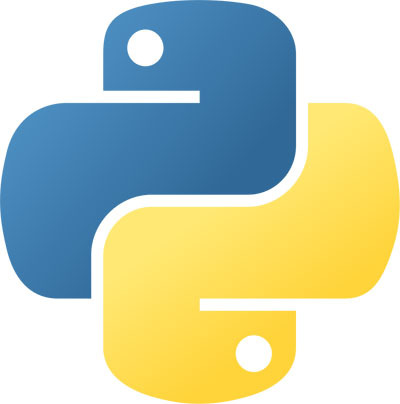
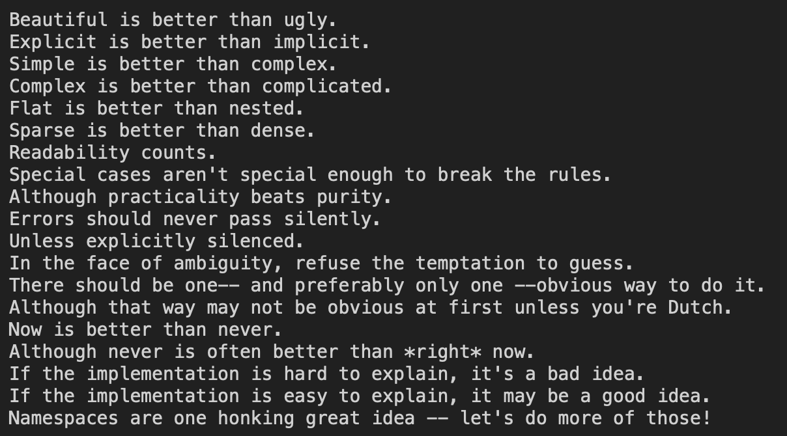
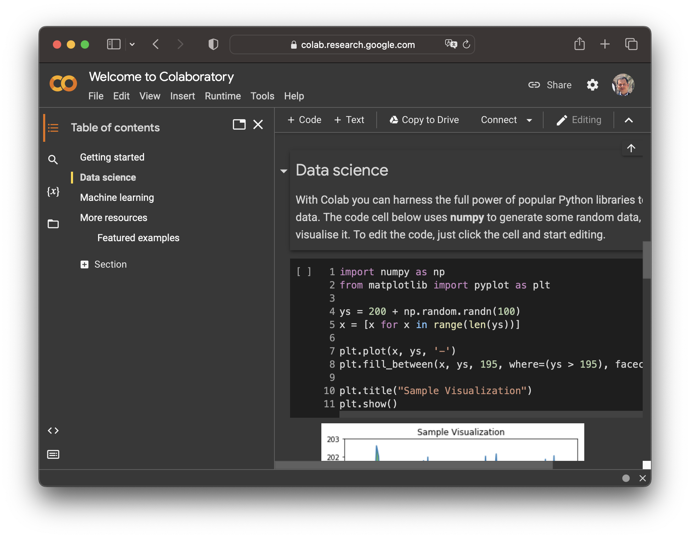
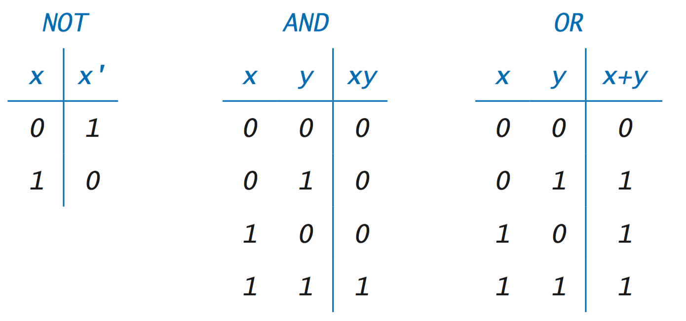
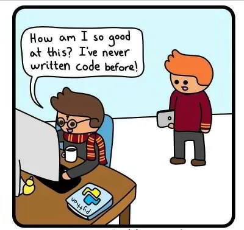

print ("Hello, World!")Hello, World!DSCI 1412 - Fall 2024
Python is an interpreted, high-level, general-purpose programming language that supports multiple programming paradigms, including procedural, object-oriented, and functional programming.
It was developed by Guido van Rossum and first released in 1991.

When he began implementing Python, Guido van Rossum (left) was also reading the published scripts from Monty Python’s Flying Circus (right), a BBC comedy series from the 1970s. Van Rossum thought he needed a name that was short, unique, and slightly mysterious, so he decided to call the language Python. [Source: General Python FAQ]
Python is built on the philosophy of simplicity and elegance. The core philosophy, outlined in The Zen of Python by Tim Peters, highlights principles like “Readability counts” and “There should be one—and preferably only one—obvious way to do it.”



Source: Girl Geek X
Source: NASA. Credit: Event Horizon Telescope Collaboration
Homepage: https://colab.research.google.com/ (runs online, cloud-computing like)

Homepage: https://github.com/jupyterlab/jupyterlab-desktop (runs offline, desktop)

Homepage: https://code.visualstudio.com/ (runs offline, desktop)

As with any programming course, here is the Hello World! in Python.
print ("Hello, World!")Hello, World!
Variables are containers for storing data values. In Python, variables are created the moment you assign a value to it.
x = 5
name = "Alice"age, Age, and AGE are three different variables).Python has various data types including:
int (e.g., 5)float (e.g., 5.0)str (e.g., "Hello, World!")bool (e.g., True or False)Python is dynamically typed, which means the type of a variable is determined at runtime.
x = 4 # x is an integer
x = "Sally" # x is now a stringBoolean variables in Python are defined by two constant objects True and False. Understanding how Boolean operations work is crucial for control flow in programming.
AND operation (True if both are true)OR operation (True if at least one is true)NOT operation (Inverts the Boolean value) (Modified from Intro To Programming)
+, -, *, /, //, %, ** for basic math operations.==, !=, <, >, <=, >= for comparing values.and, or, not for boolean logic.=, +=, -=, *=, /=, etc., to assign values to variables.in, not in, to check membership in sequences.5 + 3 results in 8 (Arithmetic)5 == 3 results in False (Comparison)True and False results in False (Logical)You can convert between different types using Python’s built-in functions like int(), float(), and str().
int(5.4) # Converts to integer
str(20) # Converts to string
float("3.14") # Converts to floatStrings in Python are used to handle textual data. They can be enclosed in either single quotes ('...') or double quotes ("...").
'Hello ' + 'World!''Hello World!''Ha' * 3'HaHaHa''Hello'[1]'e''Hello'[1:4]'ell'.upper(), .lower(), .strip(), .split(), .replace(), .find(), .join(), .count(), .startswith(), .endswith()
An even more comprehensive list of string methods in Python can be found:
Lists in Python are used to store multiple items in a single variable. Lists are ordered, mutable (changeable), and allow duplicate values.
my_listmy_list = [1, 2, 3]
my_list[1, 2, 3]graph LR;
A["my_list[0] = 1"] --> B["my_list[1] = 2"] --> C["my_list[2] = 3"];
namesnames = ["Alice", "Bob", "Charlie"]
names['Alice', 'Bob', 'Charlie']graph LR;
A["names[0] = Alice"] --> B["names[1] = Bob"] --> C["names[2] = Charlie"];
my_list[0]1names[1:3]['Bob', 'Charlie']my_list.append(4)my_list.remove(1)names.sort()Understanding variable scopes and mutability is crucial for Python programming.
int, float, bool, str. Changing the value creates a new object.list, dict, set. They can be changed in place without creating a new object.Exploring Python’s built-in data types reveals the language’s flexibility.
my_tuple = (1, 2, 3)range(1, 10)
A dictionary in Python is a collection of key-value pairs, where each key is unique, and it maps to a specific value.
my_dict = {
"key1": "value1",
"key2": "value2",
"key3": "value3"
}# Creating a dictionary
my_dict = {
"name": "Alice",
"age": 30,
"city": "New York"
}graph TD;
A["my_dict"] --> B["name: Alice"];
A --> C["age: 30"];
A --> D["city: New York"];
my_dict["name"]'Alice'my_dict["email"] = "alice@example.com"
my_dict{'name': 'Alice', 'age': 30, 'city': 'New York', 'email': 'alice@example.com'}my_dict["age"] = 31
my_dict{'name': 'Alice', 'age': 31, 'city': 'New York', 'email': 'alice@example.com'}del my_dict["city"]
my_dict{'name': 'Alice', 'age': 31, 'email': 'alice@example.com'}my_set = {1, 2, 3}frozen_set = frozenset([1, 2, 3])Use \ to insert special characters, e.g.,
new line:
print ("Hello\nWorld!")Hello
World!print ("Hello\tWorld!")Hello World!( ) are for calling functions[ ] are are indexing listsprint ("Thank you!")Thank you!